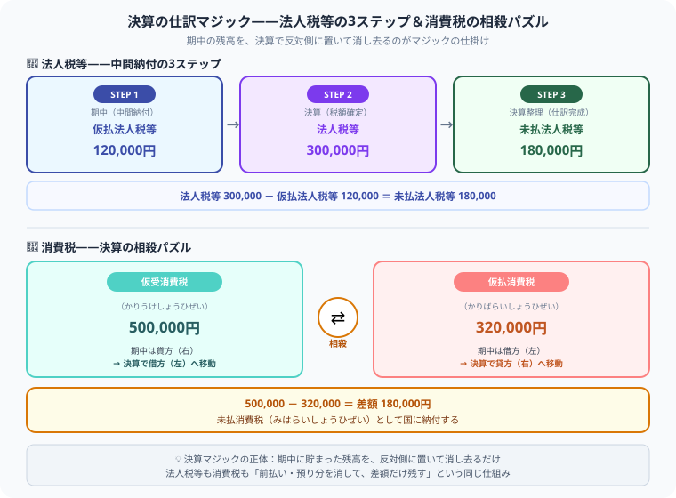

【簿記2級】法人税等・消費税の仕訳を完全解説
中間納付・消費税相殺パズルを図解つきで攻略
こんにちは、大谷です！実は、これから紹介する各種の論点は、どれも僕が大学の講義内で初めて学んだとき、「うわっ、なんじゃこりゃ……！」と頭を抱えた難しいものばかりでした（笑）。だからこそ、当時の僕と同じように悩んでいる皆さんに、どこよりも直感的にパズル感覚で理解してもらえるよう、僕なりの分かりやすい図解を交えてお届けします！
また、毎日のブログ執筆やアプリ開発のモチベーション維持のために、記事の末尾のほうにある「いいねボタン」をポチッと押してもらえると、めちゃくちゃ励みになりますしすごく嬉しいです！それでは、一緒に攻略していきましょう！
- 法人税等は3ステップで整理——期中に前払い（仮払法人税等）→ 決算で本当の税額確定 → 差額を未払法人税等に計上
- 中間納付の計算式——法人税等（300,000）−仮払法人税等（120,000）＝未払法人税等（180,000）
- 消費税の相殺パズル——仮受消費税（借方に移動）と仮払消費税（貸方に移動）をぶつけて差額が未払消費税
- 借方・貸方に迷ったら——図解の「左右移動」を思い出そう！
法人税等と消費税は、毎回の決算整理で必ず登場する税金論点です。「なぜ300,000が借方なのに120,000と180,000に分かれるの？」「仮受消費税がなぜ借方に来るの？」——この2つの疑問を図解つきで一気に解決します。
🏦 法人税等とは——利益にかかる3種類の税金

法人税等は中間納付の「仮払」と期末確定の「未払」を使い分けるのがポイントです。消費税は仮払・仮受を相殺して差額を納付します。
法人税等（ほうじんぜいとう）とは、会社の利益に対してかかる税金の総称です。具体的には次の3つをまとめて処理します。
| 税金の種類 | 課税対象 | ひとことメモ |
|---|---|---|
| 法人税（ほうじんぜい） | 会社の利益 | 国に納める。利益が多いほど高くなる |
| 住民税（じゅうみんぜい） | 法人税をもとに計算 | 都道府県・市区町村に納める |
| 事業税（じぎょうぜい） | 会社の事業活動 | 都道府県に納める |
これら3つをまとめて勘定科目名「法人税等（ほうじんぜいとう）」として仕訳で処理するのが、簿記2級の出題スタイルです。
📋 中間納付がある場合——3ステップで仕訳を理解する
「中間納付（ちゅうかんのうふ）」とは、期末（決算）の前に税金を先払いする制度のことです。「まだ税額が確定していないのにとりあえず払う」ので、仮払法人税等（かりばらいほうじんぜいとう）という勘定で処理します。
図解のSTEP 1〜3と仕訳の数字を紐づけて理解する
中間納付（ちゅうかんのうふ）
「仮の支払い」として記録
税額確定（ぜいがくかくてい）
これが今年の「正解」
仕訳の完成
300,000 − 120,000
流れをストーリーにすると、こうなります。
- 期中（STEP1）：「今年はだいたいこれくらいの税金になるかな」と見込んで、120,000円を仮払法人税等として先払いします。これが大元のサイフから出ていくお金の1回目です。
- 決算（STEP2）：期末になって今年の利益が確定し、「本当の税金は300,000円だ」と判明します。これが今年の「正解の税額」です。
- 決算整理（STEP3）：先払い分120,000円はすでに払っているので、残り（300,000 − 120,000 = 180,000円）をあとで納付するための未払法人税等として計上します。
決算において、法人税等の総額が300,000円と確定した。なお、期中に仮払法人税等120,000円を計上済みである。
借方には「今年の税金の正解（法人税等 300,000）」を置きます。 貸方には「すでに払った分（仮払法人税等 120,000）」と「まだ払っていない分（未払法人税等 180,000）」の2つを置きます。 仕訳の借方・貸方に迷ったらこの図の左右を思い出してください！
中間納付なし（シンプルパターン）
中間納付がない場合は、決算で確定した金額をそのまま未払法人税等に計上するだけです。
🔄 消費税の処理——決算マジック「相殺パズル」を解く
消費税（しょうひぜい）の税抜方式（ぜいぬきほうしき）では、日々の取引で次の2つの科目を使います。
| 科目名 | 読み方 | 期中の位置 | 意味 |
|---|---|---|---|
| 仮受消費税 | かりうけしょうひぜい | 貸方（右） | お客様から売上と一緒に預かった消費税 |
| 仮払消費税 | かりばらいしょうひぜい | 借方（左） | 仕入・経費を支払うときに先に払った消費税 |
| 未払消費税 | みはらいしょうひぜい | 決算後に発生 | 国に納付する差額（負債） |
「決算マジック」——左右をひっくり返して相殺する
消費税の決算整理のポイントは、期中に使っていた借方・貸方の位置をそれぞれひっくり返すことです。これによってお互いの箱をガサッと相殺（打ち消し）することができます。
（−）
仕訳で表すと、次のようになります。
期中は仮受消費税を貸方（右）に積み上げてきましたね。決算ではその積み上げた残高を「ゼロにして消す」ために、反対側の借方（左）に置きます。これが相殺の仕組みです。仮払消費税も同じで、期中の借方（左）の残高を消すために、決算では貸方（右）に移動させます。
⚠️ よくあるミス（実戦版）——ここで合否が分かれる
- 仮払消費税と仮受消費税の借貸を逆にする——期中と決算で左右が逆になる点が最大の罠です。図解の「移動先」を覚えておきましょう。
- 中間納付分を未払法人税等の金額に含めてしまう——未払法人税等はあくまでも「まだ払っていない残り」です。仮払法人税等を引き忘れに注意。
- 法人税等と法人税等調整額を混同する——法人税等は「今年の実際の税金」、法人税等調整額は「税効果会計による調整」です。別の論点として扱いましょう。
- 税込方式と税抜方式の処理を混ぜる——問題文に「税抜方式」と書いてあれば仮払・仮受を使います。税込方式では仮払・仮受は使いません。
- 消費税の差額がマイナスになる（仮払＞仮受）——この場合は「未収消費税（資産）」になります。稀なケースですが選択肢に出ることがあります。
📋 まとめ——試験前に確認するチェックリスト
法人税等・消費税の重要ポイント
決算の仕訳マジックは、種を知れば必ず解けるパズルです。この記事が「あ、そういうことか！」につながったら、僕の毎日の執筆・アプリ開発のモチベーション維持のために、この下にある【いいねボタン】をポチッと押してもらえると、めちゃくちゃ嬉しいです！